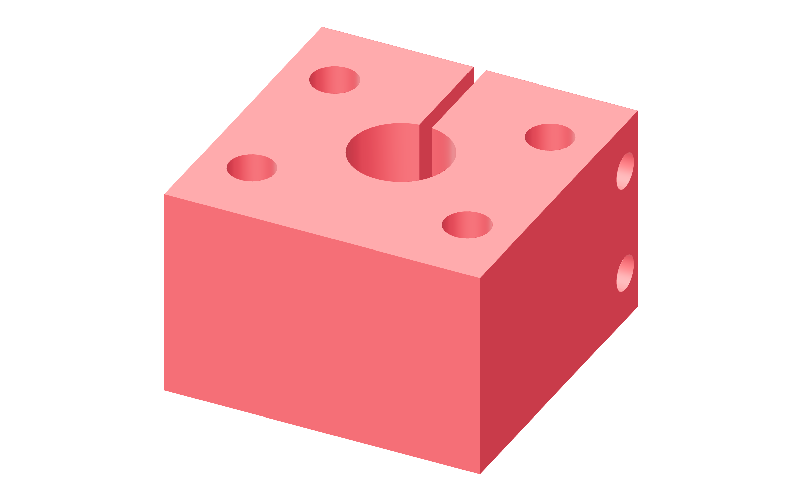

Preparation / metal30 / 179
Make seven clamping hubs
The reamed bore centers a plain 12 mm shaft. Two grade 12.9 clamp bolts close the split hub; each assembled joint receives a measured torque proof before carrying a frame.
Add7 shaft-hub blanks · plain 12 mm shafts
Tools / setupDrill press · 12 mm reamer · actual-size face projections · vise

- Drill and ream the central bore square to the hub's broad face.
- Drill the four 5.5 mm holes on the 26 × 20 mm rectangle from the fabrication drawing.
- Deburr the reamed bore without rounding its locating surface. Remove swarf from every hole.
- Trial-fit and label the plain shaft/hub pair. Keep the four mounting holes clear of the split and clamp passages.
Ready when
The plain shaft enters the square bore by hand without rocking or being driven into it. A loose, tapered or skewed bore fails the locating fit. Correct the metal hub before closing its clamp.